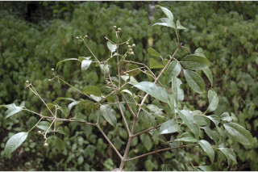
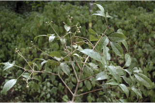

| Leaves : | Leaves compound , imparipinnate , opposite , decussate ; stipule interpetiolar , caducous and leaving scar ; rachis pulvinate , terete , glabrous ; petiolule 0.5 long for lateral leaflets and 2 cm long with swollen apex in terminal one, canaliculate , glabrous ; leaflets opposite , usually 3 or rarely 5, 7-13 x 3-5 cm, elliptic to elliptic-oblong to ovate , apex acuminate , base acute , margin serrate , coriaceous , glabrous ; midrib thinly raised above; secondary_nerves 4-8 pairs, gradually curved and ascending towards apex ; tertiary_nerves reticulo-percurrent . |


 
